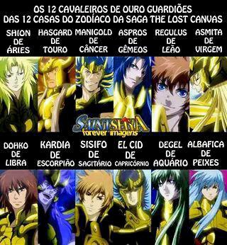
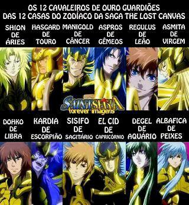
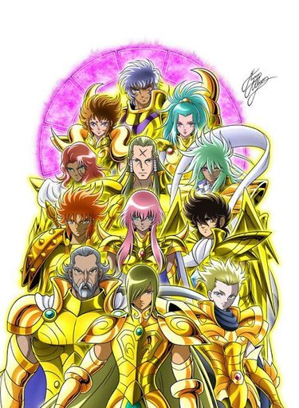
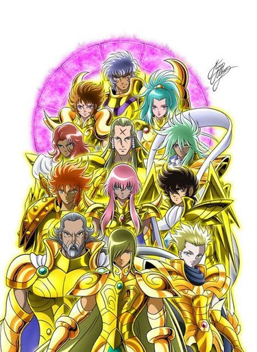

Cavaleiros do Zodíaco (聖闘士星矢, Seinto Seiya?, lit. "Saint Seiya") é uma série de mangá escrita e ilustrada por Masami Kurumada. Foi originalmente publicada na revista Weekly Shōnen Jump, da editora Shueisha, entre janeiro de 1986 e dezembro de 1990, com seus capítulos compilados em 28 volumes tankōbon. A história gira em torno de um grupo de jovens guerreiros chamados "Cavaleiros" que lutam para proteger a reencarnação da deusa Atena em sua batalha contra outras divindades do panteão grego.
The Lost Canvas é uma série de mangá feita por Shiori Teshirogi, que é uma continuação da série original Cavaleiros do Zodíaco. A história se passa em um universo alternativo onde os eventos da série original são reimaginados e expandidos. The Lost Canvas explora novas histórias e personagens, mantendo a essência dos Cavaleiros do Zodíaco, com batalhas épicas, mitologia grega e temas de amizade e coragem.
Next Dimension é uma série de mangá escrita e ilustrada por Masami Kurumada, o criador original de Cavaleiros do Zodíaco. A história se passa após os eventos da série original e segue os Cavaleiros em uma nova aventura para proteger a deusa Atena e enfrentar novas ameaças. Next Dimension expande o universo dos Cavaleiros do Zodíaco, introduzindo novos personagens, desafios e desenvolvendo ainda mais a mitologia grega que é central para a série.
Ômega é uma série de 2012 a 2014, que serve como uma continuação direta da série original de Cavaleiros do Zodíaco. A história se passa vários anos após os eventos da série original e segue um novo grupo de jovens Cavaleiros que lutam para proteger a deusa Atena contra novas ameaças. Cavaleiros do Zodíaco Ômega apresenta novos personagens, armaduras e inimigos, mantendo a essência da série original com batalhas épicas, mitologia grega e temas de amizade e coragem.
Cavaleiros de ouro
 

 

Lista dos Cavaleiros de Ouro
Os Cavaleiros de Ouro são os mais poderosos entre os Cavaleiros de Atena, cada um representando uma das doze constelações do zodíaco. Eles vestem armaduras douradas que lhes conferem habilidades extraordinárias e são responsáveis por proteger o Santuário e a deusa Atena. Cada Cavaleiro de Ouro possui técnicas únicas e é conhecido por sua força, velocidade e resistência excepcionais.
Abaixo estão listados os Cavaleiros de Ouro das quatro principais sagas de Cavaleiros do Zodíaco: a série clássica, The Lost Canvas, Next Dimension e Ômega.
Cavaleiros de Ouro da série clássica
- Áries - Mu
- Touro - Aldebaran
- Gêmeos - Saga/Kanon
- Câncer - Máscara da Morte
- Leão - Aiolia
- Virgem - Shaka
- Libra - Dohko
- Escorpião - Milo
- Sagitário - Aiolos
- Capricórnio - Shura
- Aquário - Camus
- Peixes - Afrodite
Cavaleiros de Ouro de The Lost Canvas
- Áries - Shion
- Touro - Hasgard
- Gêmeos - Aspros/Defteros
- Câncer - Manigold
- Leão - Regulus
- Virgem - Asmita
- Libra - Dohko
- Escorpião - Kardia
- Sagitário - Sisyphus
- Capricórnio - El Cid
- Aquário - Dégel
- Peixes - Albafica
Cavaleiros de Ouro de Next Dimension
- Áries - Shion
- Touro - Ox
- Gêmeos - Abel/Cain
- Câncer - DeathToll
- Leão - Kaiser
- Virgem - Shijima
- Libra - Dohko
- Escorpião - Écarlate
- Sagitário - Gestalt
- Capricórnio - Izo
- Aquário - Mystoria
- Peixes - Cardinale
Cavaleiros de Ouro de Ômega
- Áries - Kiki
- Touro - Harbinger
- Gêmeos - Paradox/Integra
- Câncer - Schiller
- Leão - Micenas
- Virgem - Fudou
- Libra - Genbu
- Escorpião - Sonia
- Sagitário - Seiya
- Capricórnio - Ionia
- Aquário - Tokisada
- Peixes - Amor
Os Cavaleiros de Prata

Os Cavaleiros de Prata são guerreiros poderosos que servem como intermediários entre os Cavaleiros de Bronze e os Cavaleiros de Ouro. Eles vestem armaduras prateadas que lhes conferem habilidades superiores às dos Cavaleiros de Bronze, mas ainda estão abaixo do nível dos Cavaleiros de Ouro. Cada Cavaleiro de Prata possui técnicas únicas e é conhecido por sua força, velocidade e resistência excepcionais, embora não sejam tão poderosos quanto os Cavaleiros de Ouro.
Os Cavaleiros de Bronze

Os Cavaleiros de Bronze são os guerreiros mais jovens e inexperientes, mas também os mais determinados. Eles vestem armaduras de bronze que, embora menos poderosas do que as armaduras de prata e ouro, ainda lhes conferem habilidades especiais. Cada Cavaleiro de Bronze possui um forte senso de justiça e está disposto a lutar por seus amigos e pela proteção da Terra.